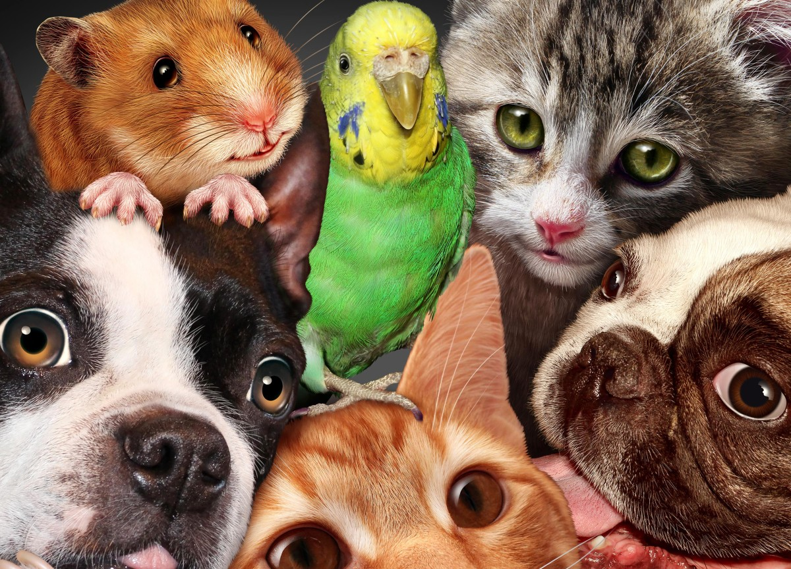
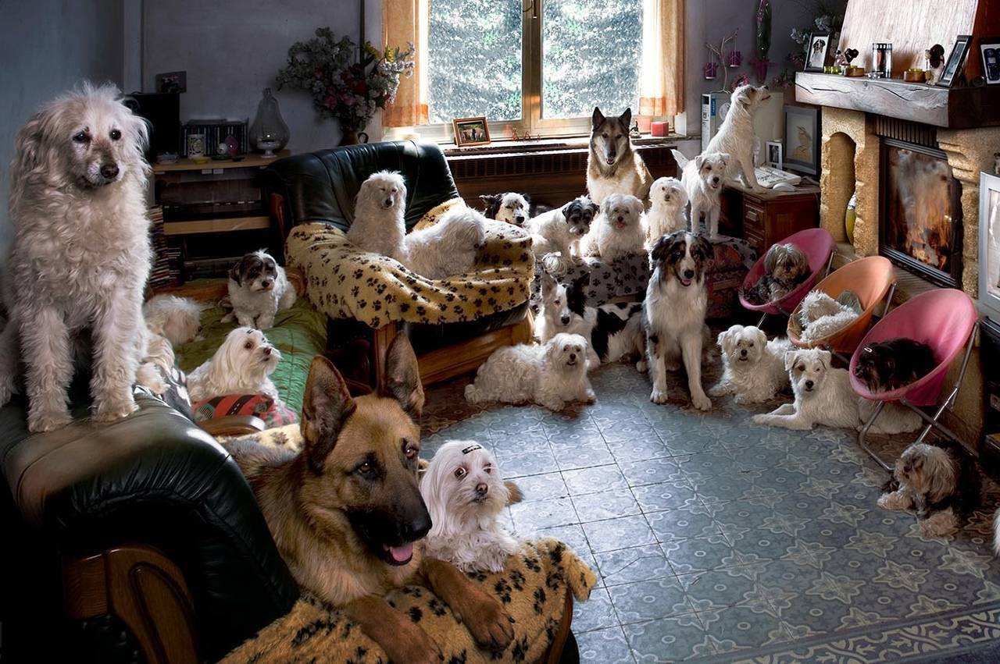
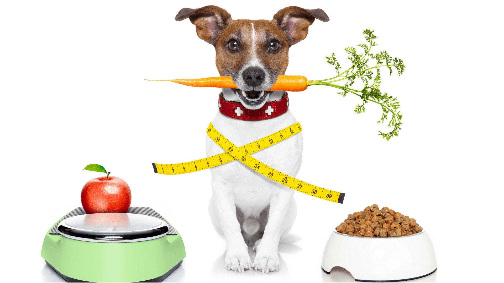
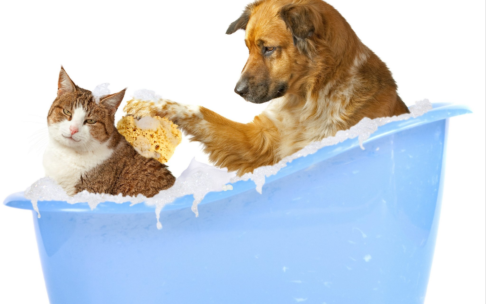
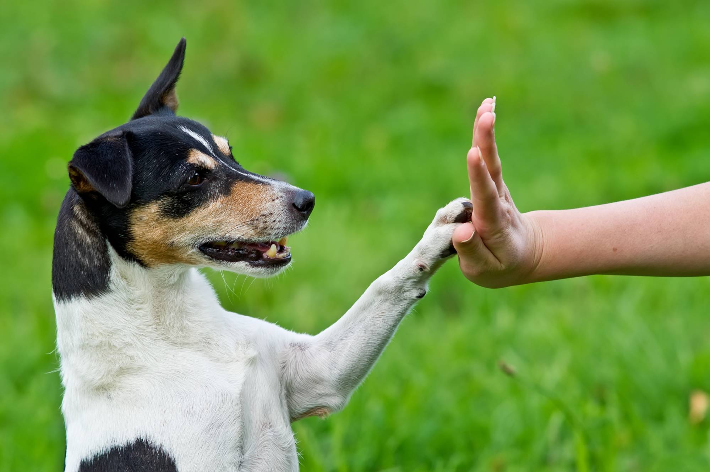
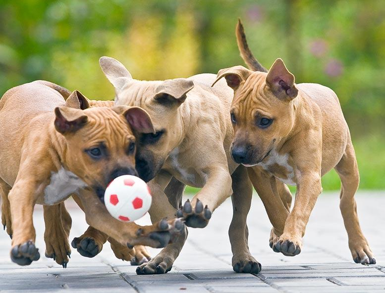
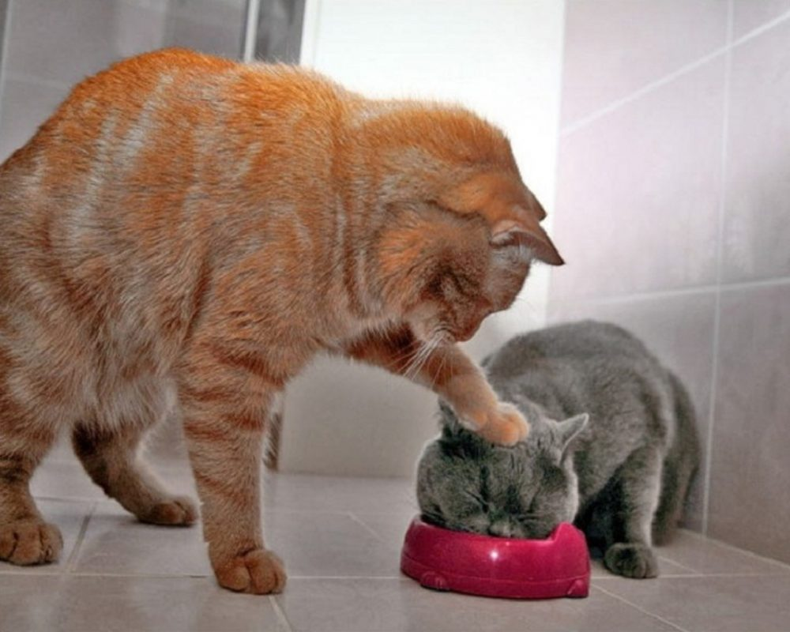
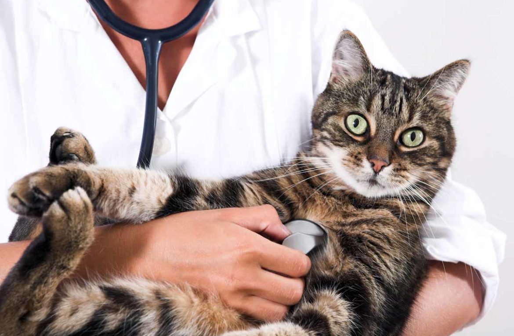

Советы по уходу домашних животных.
Каждый, кто планирует заводить питомца, сталкивается с рядом вопросов относительно ухода за новым членом семьи. Появившемуся в доме животному придется создать комфортные условия для проживания. Прежде чем брать того или иного зверька, необходимо внимательно изучить условия, к которым он привык. Кроме того, нужно учитывать темперамент, характер, предпочтения животного. Далеко не каждый малыш может подстраиваться под режим жизни человека, ведь многие из них от природы ведут ночной образ жизни.
{kind=link}
Правильное питание и рацион
Здоровье, внешний вид и настроение животного зависит от сбалансированного питания. Следует тщательно изучить какие корма и в каком количестве нужно давать животному. Главным источником питательных веществ для большинства животных является сухой корм. Однако помимо него, в рационе должны быть включены и другие продукты. Белки, углеводы, жиры, витамины и минералы должны быть представлены в достаточных количествах.
{kind=link}
Кроме правильного выбора продуктов для рациона, важно также следить за размером порций. Перекорм или недокорм может привести к различным проблемам со здоровьем, включая ожирение или облегчение. Следуйте рекомендациям ветеринара относительно оптимальной дневной нормы пищи для вашего животного. Помимо основного рациона, стоит учесть и потребности животного в воде. Чистая и свежая вода должна быть доступной вашему питомцу в течение всего дня.
{kind=link}
Основы гигиены и ухода
Животные восприимчивы к ряду бактерий, которые вызывают многочисленные заболевания. Поэтому не стоит забывать ежедневно проводить личную гигиену питомца. Регулярно чистите место, где живет ваш питомец. Ухаживать за кожей и шерстью, зубами и полостью рта. Обращать внимание на глаза, уши и когти вашего питомца. Эти процедуры способны сделать любимчика не только привлекательным и ухоженным, но и здоровым. Как часто и правильно проводить эти мероприятия вам подскажет ветеринарный врач.
{kind=link}
Воспитание и социализация
Для того чтобы ваше домашнее животное было счастливым и воспитанным, нужно уделить время на его правильное воспитание и социализацию. Социализация — это процесс, в ходе которого животное учится взаимодействовать с людьми и другими животными без агрессии или боязни. Начинать социализацию лучше всего в молодом возрасте, но даже взрослые животные могут быть социализированы.
{kind=link}
Также важно обеспечить животному достаточно физической активности и ментальных стимулов. Регулярные игры, тренировки и умственные задачи помогут вашему питомцу быть здоровым и счастливым. Воспитывая домашнее животное, вы должны быть последовательными и терпеливыми. Не забывайте поощрять положительное поведение и наказывать нежелательное, но всегда справедливо и без жестокости.
{kind=link}
Не забывайте также о приятных взаимоотношениях с вашим питомцем. Обеспечьте ему достаточно любви, ласки и внимания, и вы увидите, как он будет откликаться на вас с благодарностью и преданностью.
{kind=link}
Наблюдение за состоянием здоровья
Чтобы сохранить домашнему животному крепкое здоровье необходима регулярная консультация и осмотр ветврача. Он поможет на раннем этапе выявить проблемы и заболевания вашего питомца и своевременно начать лечение. Посещение ветеринара рекомендуется не только для лечения болезней, но и для профилактики.
{kind=link}
Ветеринар также может провести осмотр, проверить вес, измерить температуру тела и провести другие процедуры, чтобы убедиться, что ваше животное здорово. Он также может порекомендовать необходимые прививки и предоставить советы по уходу и кормлению вашего питомца.